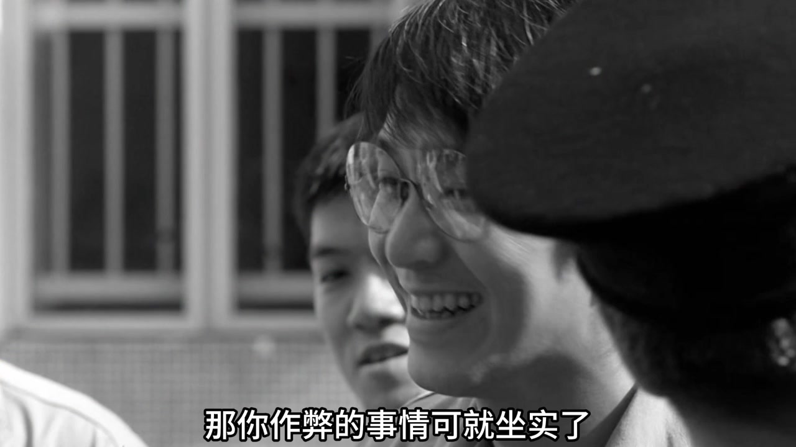
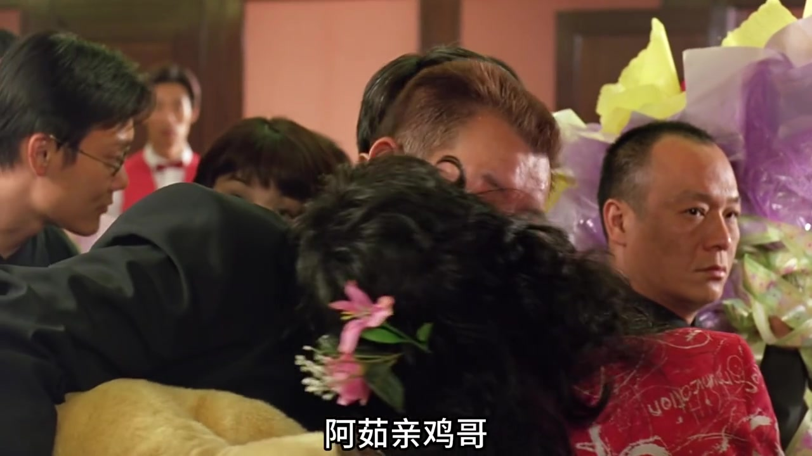
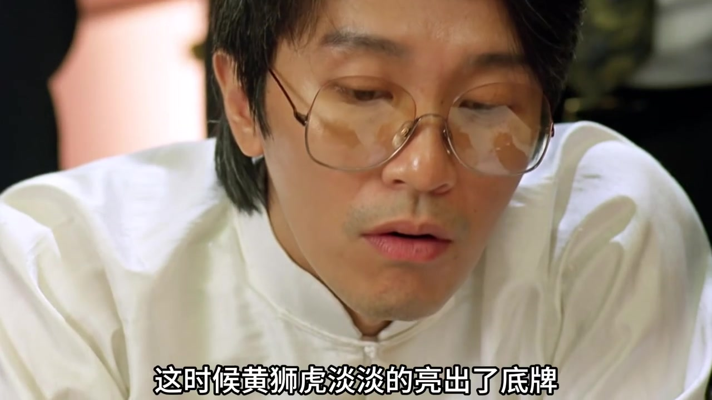
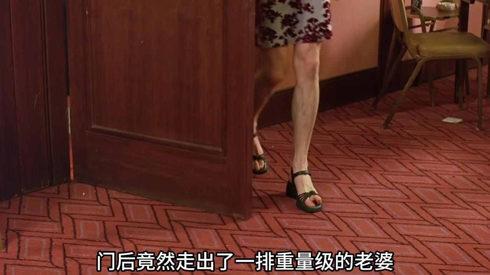
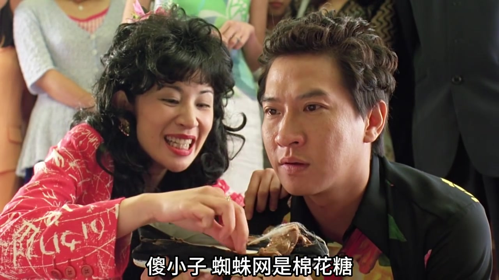

一张被藏起来的 A，把牌局变成了人心局
视频一开场就把镜头对准监狱牌局。解说者先给出自己的判断：这不只是无厘头笑料，而是一场“心理处决”。基哥把唯一能赢的 A 藏进口袋，桌面上只剩老 K；按牌面看，黄师虎已经没有胜算。
黄师虎没有把冲突推到正面。他继续抽牌、继续笑，让“下一张仍不是 A”这件事逐渐成为对作弊者的公开压力。基哥若坚持下去，作弊就会被当众坐实；若收手，至少还能留住面子。最终，基哥主动递出棍子，把决定权还了回来。
“如果翻开这张还不是 A，那你作弊的事情可就坐实了。” — 解说转录 [01:28]

棍子到了黄师虎手里，他只轻轻落下一下。解说者把这理解为“给面子”：既赢下局面，也让对方有台阶。随后基哥借黄师虎生日给出两天假释，这一段在视频的叙述里形成了人情回报。
立场提示：“心理处决”“以退为进”“恩威并施”等是视频解说者对剧情的分析，不是影片角色明确说出的理论结论。
接风拥抱被拦下，规则却被执行到荒诞
离开监狱段落，视频转到生日接风。黄师虎穿着夸张礼服现身，妻子阿如本想上前拥抱，却被随行人员挡开。理由听来一本正经：黄师虎仍是犯人，为了安全不能与人肢体接触。
既然不能直接接触，人物就发明了一个完全符合字面规则、却极其离谱的替代办法：阿如先亲基哥，再由基哥转亲黄师虎。镜头把中间人的尴尬放大，喜剧也从“禁止接触”这条规则里长了出来。

视频解说将这一幕视作对死板教条的讽刺。画面本身能确认的是：人物没有违反“不能直接接触”的字面要求，却制造了比直接拥抱更尴尬的结果。
凉宽不服“千王”排场，一句话把宴会变成擂台
黄师虎来到赌桌，打牌、摸牌都有人代劳。旁边的凉宽看不惯这套排场，先从炎热天气里的毛领说起，又直接质疑黄师虎的身份。视频穿插人物对白和解说，让挑衅一步步升级。
视频把凉宽的反应概括为“越无知，越觉得自己比专家厉害”。黄师虎则没有发火，而是笑着提出一场十三张赌局：凉宽赢了拿十万元；输了，只要亲黄师虎的妻子。表面上，两个结果似乎都对凉宽有利。
证据边界：视频使用“达克效应”解释凉宽的自信，这是解说者套用的概念；仅凭这一段剧情不能完成心理学意义上的验证。
好牌不等于赢：当庄家掌握规则解释权
赌局开始后，凉宽拿到一副看起来极强的牌：解说称他的头、中、尾三道合计能赢十八道。凉宽已经认定自己胜券在握，黄师虎才不紧不慢地亮出底牌。

双方围绕中间一墩是否比较花色、庄家在平手时是否获胜展开计算。按照黄师虎给出的规则，他在中道取得双倍优势，抵消凉宽其余两道的得分，最后反赢两道。视频由此给出一句很重的总结：
“你以为你在算概率，其实人家在算计规则。只要解释权在庄家手里，你牌再好，也注定是输。” — 解说转录 [05:56—06:03]
这句总结是解说者从剧情抽出的观点。就画面过程而言，能直接看到的是双方对规则口径的争执，以及黄师虎凭庄家身份完成裁定。
惩罚从“艳遇”变成求饶，最后一口才揭开陷阱
凉宽准备认罚，却发现“妻子”并不只指刚才见到的阿如。门后陆续走出一排人，原本被他想象成占便宜的条件突然变了味。他拒绝亲吻，黄师虎顺势给出第二个选择：低头接受另一项更伤面子的惩罚。

凉宽最终跪下舔鞋。黄师虎告诉他，鞋上的蛛网和粉末是棉花糖与糖粉；但紧接着又抛出最后一个恶作剧答案。前两口的甜与最后一口的崩溃，成为视频收束整段解说的比喻。

“永远不要因为尝到了甜头，就放松警惕。” — 解说转录 [07:26]
视频到这里结束。它从一场被做局的牌局出发，连续用藏牌、字面规则、庄家裁定和糖衣惩罚推进情节；而“规则、人心与警惕”则是解说者贯穿始终的解释线索。